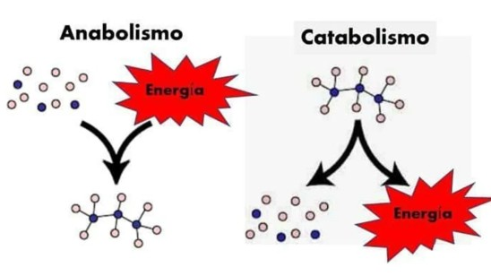

Descubre cómo la célula transforma moléculas y obtiene energía para mantener todas sus funciones vitales mediante procesos químicos esenciales.

El metabolismo es el conjunto de reacciones químicas que ocurren dentro de las
células para transformar nutrientes en energía y moléculas necesarias para la
vida.
Estas reacciones son controladas por enzimas y permiten que los organismos
crezcan, reparen estructuras celulares, obtengan energía y eliminen sustancias
de desecho.
El metabolismo se divide principalmente en dos grandes procesos:
anabolismo y catabolismo.
El equilibrio entre ambos procesos permite que la célula mantenga su funcionamiento y sobreviva.
Proceso constructivo donde la célula forma moléculas complejas a partir de moléculas simples utilizando energía en forma de ATP.
Proceso degradativo donde la célula rompe moléculas grandes para liberar energía utilizable.
Molécula energética principal que almacena y transporta energía dentro de la célula.
Proteínas que aceleran y regulan las reacciones químicas del metabolismo.
El anabolismo es el conjunto de reacciones metabólicas encargadas de construir
moléculas complejas a partir de moléculas más simples. Este proceso requiere
energía en forma de ATP.
Es fundamental para el crecimiento celular, la reparación de tejidos y la
formación de estructuras necesarias para el funcionamiento del organismo.
Forma moléculas grandes como proteínas, lípidos y ácidos nucleicos a partir de unidades pequeñas.
Utiliza ATP para unir moléculas simples y crear estructuras más complejas.
Los aminoácidos se unen mediante los ribosomas para formar proteínas.
La célula duplica su material genético antes de dividirse.
La fotosíntesis es un ejemplo de anabolismo donde las plantas utilizan la energía solar para transformar dióxido de carbono y agua en glucosa.
Los aminoácidos obtenidos de los nutrientes se unen para formar proteínas que cumplen funciones estructurales y reguladoras dentro de la célula.
La célula produce grasas y fosfolípidos utilizados para formar membranas celulares y almacenar energía.
La célula obtiene aminoácidos, nucleótidos y otros componentes necesarios para crear moléculas mayores.
El ATP proporciona la energía necesaria para iniciar las reacciones de síntesis.
Las enzimas controlan y aceleran la unión de las moléculas precursoras.
Las unidades pequeñas se unen formando proteínas, ADN, ARN y carbohidratos complejos.
Las moléculas creadas son transportadas hacia las zonas donde la célula las necesita.
El catabolismo es el proceso metabólico mediante el cual la célula degrada
moléculas complejas en moléculas más pequeñas, liberando energía almacenada.
Esta energía es utilizada principalmente para producir ATP y mantener las
funciones celulares.
Rompe moléculas complejas como carbohidratos, lípidos y proteínas en unidades más simples.
La energía obtenida durante la degradación se almacena en moléculas de ATP.
La glucosa se divide en moléculas más pequeñas produciendo energía para la célula.
Proceso donde la célula obtiene gran cantidad de ATP utilizando oxígeno.
Es la primera etapa del catabolismo de la glucosa. Ocurre en el citoplasma y transforma una molécula de glucosa en dos moléculas de piruvato, generando ATP.
Ocurre en la mitocondria y permite extraer energía de las moléculas provenientes de la glucosa mediante una serie de reacciones químicas.
Es la etapa final de la respiración celular donde se produce la mayor cantidad de ATP utilizando oxígeno.
Los nutrientes como glucosa, lípidos y proteínas ingresan a la célula para ser utilizados como fuente de energía.
La glucosa se divide en moléculas más pequeñas liberando energía en forma de ATP.
El piruvato obtenido de la glucólisis se transforma en Acetil-CoA para entrar en la mitocondria.
Las moléculas son degradadas completamente liberando electrones y energía.
La cadena respiratoria utiliza los electrones para generar grandes cantidades de energía.
1. ¿Cuál proceso construye moléculas complejas?
2. ¿Qué molécula proporciona energía a la célula?
3. ¿Dónde ocurre principalmente la respiración celular?